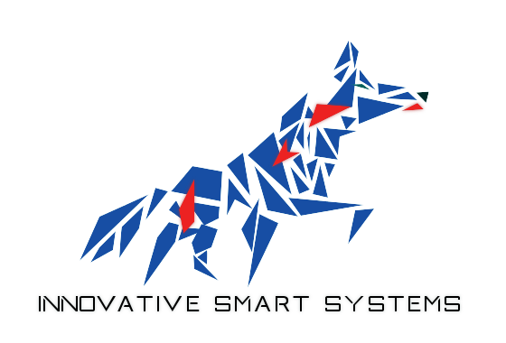

Introduction
Ce portfolio est le résultat de ma dernière année d'études à l'INSA de Toulouse. Il permet de résumer mon semestre au sein du Parcours Transversal Pluridisciplinaire
Le PTP ISS a pour but d'inculquer aux étudiants une nouvelle manière de réfléchir, basée sur l’innovation et les objets connectés (être capable de créer, produire et distribuer un système intelligent).
Acquérir cette formation permet d’être compétent dans un domaine donné tout en étant capable de comprendre et d’agir dans des projets mélangeant plusieurs disciplines.
Le portfolio qui suit comprend donc quatre grandes parties : une présentation personnelle, une partie descriptive de mes expériences les plus pertinentes (stages et projets), une partie technique recouvrant l’ensemble des thèmes abordés lors de ce semestre, et, enfin, une partie analytique basée sur les compétences acquises (cette dernière partie comprend la matrice des compétences complète).
Identification
Mes informations de contact sont disponibles dans l'onglet 'CONTACT' de ce site web.
Curriculum Vitae
Mon CV est disponible (en anglais et français) dans l'onglet 'CURRICULUM' de ce site web.
Les acquis de la formation
Voici la matrice correspondant aux différentes formations et enseignements suivis en lien avec ce PTP.
Vous pouvez cliquer sur les différents intitulés pour être redirigés vers la description et l'analyse correspondantes.